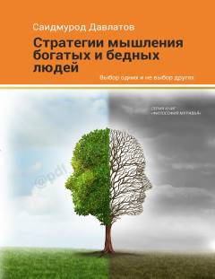

МБBoy va kambag'al insonlar fikrlashidagi asosiy farqlar va muvaffaqiyat sirlari.
Saidmurod Davlatovning ushbu kitobi boy va kambag'al odamlarning fikrlash tarzidagi farqlarni tahlil qiladi. Muallif o'zining ko'p yillik tajribasi va muvaffaqiyatli insonlar hayotini o'rganish asosida muvaffaqiyatga erishish sirlarini ochib beradi. Kitob o'quvchiga o'z fikrlashini o'zgartirish orqali hayotini yaxshilashga yordam beradi.